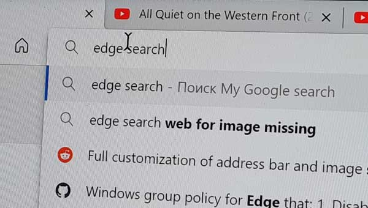

Full customization of address bar and image search engines in Microsoft Edge on Windows
A way to tailor the search to your needs


Я живу в Украине и порой делаю что-то интересное
oleg@radiokot.com.uaA way to tailor the search to your needs
На фоне в заголовке сайта – Харьков и область, война оставила свой след на некоторых из этих мест
С 24 февраля 2022 года началась полномасштабная война РФ с Украиной, с моей страной, с моим городом
Ежегодный заезд от клуба Audax Kharkov на фестиваль «Борщик у глиняному горщику». Рассказываю как это было и что я чувствовал
19 марта состоялся ночной 200 км бревет в границах города от клуба Audax Kharkov. Посмотрите как это было в видео Ромы Орлова

Придал своему Streetster Broadway 7 шоссейный вид. Жаль, что легче он от этого не стал
NFC сканер для Android позволяет узнать баланс и остаток литров на карте
An Android layout that properly scales its content in order to display physical objects such as credit cards, passports, etc.
Хранилище отрывков из книг с возможностью импорта с Amazon Kindle без подключения к компьютеру
Лента из ярких, вдохновляющих записей со страниц ВКонтакте и блогов Tumblr
Пересобранный в FB2 сборник рассказов, стихов и рисунков из книг «Killers, Angels, Refugees» и «Mirrors, Dreams, and Miracles» а таже песен P.H. и VdGG
Скрипт для поиска публичных документов пользователя в VK, сделанный 100 лет назад для Двача. Вроде бы больше не работает
Сервис, позволяющий узнать что лайкал человек ВКонтакте. Больше не работает